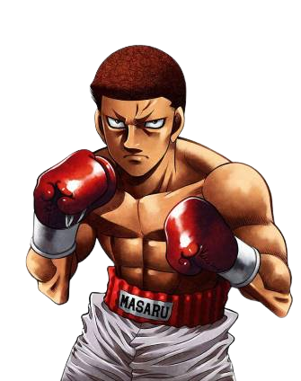

El mejor amigo de Kimura además de Takamura e Ippo, es un hombre que no tiene mucho talento para el boxeo ya que usa movimientos muy únicos y además cómicos, como el "Doble Punch" (Doble Golpe) y el "Frog Punch" (Salto de Rana). El trabaja en una tienda de fideos japoneses y es muy bueno cocinando. Al igual que Kimura y Takamura el siempre va a ver a Ippo en sus peleas, además de hacerle la vida imposible junto a Kimura. Su categoría es el peso ligero. Al igual que Kimura, ha tenido un combate por el título japonés de peso Ligero.